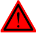
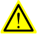
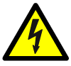

本节详细说明了用户手册中使用的所有安全信号。各个信号包括：
标题，指明危险等级（危险、警告或小心）和危险类型。
有关危险未消除时将会出现的情况的简要描述。
有关如何消除危险以简化工作执行的说明。
下表定义了规定本手册所用危险等级的图标。
标志
名称
含义

危险
警告，如果不依照说明操作，就会发生事故，并导致严重或致命的人员伤害和/或严重的产品损坏。该标志适用于以下险情：碰触高压电气装置、爆炸或火灾、有毒气体、压轧、撞击和从高处跌落等。

警告
警告如果不依照说明操作，可能会发生事故，造成严重的伤害（可能致命）和/或重大的产品损坏。该标志适用于以下险情：触碰高压电气单元、爆炸、火灾、吸入有毒气体、挤压、撞击、高空坠落等。

电击
针对可能会导致严重的人身伤害或死亡的电气危险的警告。
小心
警告如果不依照说明操作，可能会发生能造成伤害和/或产品损坏的事故。该标志适用于以下险情：灼伤、眼部伤害、皮肤伤害、听力损伤、挤压或滑倒、跌倒、撞击、高空坠落等。此外，它还适用于某些涉及功能要求的警告消息，即在装配和移除设备过程中出现有可能损坏产品或引起产品故障的情况时，就会采用这一标志。
静电放电 (ESD)
针对可能会导致严重产品损坏的电气危险的警告。
注意
描述重要的事实和条件。
提示
描述从何处查找附加信息或如何以更简单的方式进行操作。